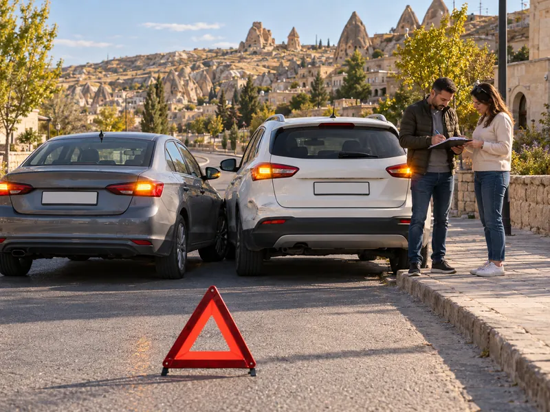

Trafik ve ÇevreKonu 16 / 1747 çıkmış soru
Trafik kazaları ve yükümlülükler
Trafik kazasının tanımını ve nedenlerini, kanunda sayılan asli kusur hâllerini, kazaya karışanların ve olay yerinden geçenlerin yükümlülüklerini, maddi hasarlı kazalarda tutanak düzenlenmesini anlatır.

1Konu anlatımı
Akılda kalsın
- Trafik kazası, kara yolunda hareket hâlindeki bir veya daha fazla aracın karıştığı ölüm, yaralanma veya zararla sonuçlanan olaydır.
- Kazaların en büyük nedeni insandır; özellikle sürücülerin kurallara uymaması, aşırı hız ve alkol başlıca sebeplerdir.
- Kırmızı ışıkta geçmek, arkadan çarpmak, kavşakta geçiş önceliğine uymamak, karşı şeride girmek ve geçme yasağı olan yerde geçmek asli kusurdur.
- Kazaya karışan sürücü hemen durur, kaza yerini ışıklı işaret veya reflektörle işaretler, ilk yardım önlemlerini alır ve kazayı yetkililere bildirir.
- Ölümlü veya yaralanmalı kazalarda yetkililer gelmeden araçların yeri değiştirilmez ve izin almadan olay yerinden ayrılınmaz.
- Yalnız maddi hasarlı kazalarda taraflar anlaşırsa durumu ortak tutanakla yazılı olarak tespit edip olay yerinden ayrılabilir.
- Park hâlindeki araca zarar veren sürücü sahibini bulamazsa araç üzerine yazılı bilgi bırakır ve en kısa sürede zabıtaya bildirir.
Trafik kazası ve nedenleri
Trafik kazası, kara yolu üzerinde hareket hâlinde olan bir veya birden fazla aracın karıştığı ve ölüm, yaralanma veya maddi zararla sonuçlanan olaydır. Kazaların nedenleri beş başlıkta incelenir:
| Kaynak | Örnekler |
|---|---|
| Sürücü | Kurallara uymamak, aşırı hız, alkollü araç kullanmak, dikkatsizlik, acelecilik, yorgunluk |
| Yaya ve yolcu | Kurallara aykırı karşıdan karşıya geçmek, dikkatsiz davranmak |
| Araç | Bakımsızlık; kusurlu fren, rot, direksiyon, far, lastik |
| Yol | Yapım hataları, eksik veya hatalı işaretleme |
| Çevre | Yağış, sis, buzlanma gibi hava koşulları |
Kusur oranlarına ilişkin istatistikler, kazaların büyük çoğunluğunun insan kaynaklı olduğunu gösterir; en büyük pay sürücülere, ardından yayalara aittir. Araç ve yol kusurlarının payı çok küçüktür. Bu nedenle kazaları azaltmanın en etkili yolu trafik kurallarına uymak ve araç bakımlarını zamanında yaptırmaktır. Fren, rot, direksiyon ve far kusurları ancak düzenli bakım ve kontrolle önlenebilir.
Trafik kazaları can kaybının yanında maddi hasar, iş gücü kaybı ve yaralıların uzun tedavi süreçleriyle ülke ekonomisini de olumsuz etkiler.
Asli kusur hâlleri
Asli kusur, kazanın oluşmasında belirleyici olan temel kural ihlalidir. Karayolları Trafik Kanunu'na göre aşağıdaki hareketleri yapan sürücüler kazada asli kusurlu sayılır:
- Kırmızı ışıklı trafik işaretinde veya yetkili memurun dur işaretinde geçmek,
- Taşıt giremez işareti bulunan yola girmek ya da bölünmüş yolda karşı yönün şerit, rampa ve bağlantı yollarına girmek (örneğin tek yönlü yola ters yönden girmek),
- İkiden fazla şeritli yollarda karşı yönden gelen trafiğin şeridine veya yol bölümüne girmek,
- Arkadan çarpmak,
- Geçme yasağı olan yerlerde geçmek (örneğin devamlı çizgiyi aşarak geçmek),
- Doğrultu değiştirme manevralarını yanlış yapmak (örneğin “sola dönülmez” levhasına rağmen sola dönmek),
- Şeride tecavüz etmek,
- Kavşaklarda geçiş önceliğine uymamak,
- Kaplamanın dar olduğu yerlerde geçiş önceliğine uymamak,
- Manevraları düzenleyen genel şartlara uymamak,
- Yerleşim yeri dışında zorunluluk olmadan taşıt yolunda park etmek veya duraklamak ve her durumda gerekli önlemleri almamak,
- Park için ayrılmış yerlerde veya taşıt yolu dışında kurallara uygun park edilmiş araçlara çarpmak.
Fazla yük veya yolcu taşımak, belgeleri yanında bulundurmamak ya da gereksiz yavaş gitmek de kural ihlalidir, ancak asli kusur listesinde yer almaz.
Kazaya karışanların yükümlülükleri
Kazaya karışan, yaralanmamış veya hafif yaralı sürücüler:
- Trafik için ek tehlike yaratmadan hemen durur, kaza yerine ışıklı işaret veya üçgen reflektör koyar ve gerekli güvenlik önlemlerini alır. Bu işaretlerin amacı yaklaşan sürücülerin dikkatini çekerek ikinci bir kazayı önlemektir; taş, dal gibi gelişigüzel malzemeler kullanılmaz.
- Yaralılar varsa ilk yardım önlemlerini alır ve 112'ye haber verir.
- Sorumluluğun belirlenmesine yarayacak iz ve delilleri korur, kaza yerindeki durumu değiştirmez.
- İstendiğinde kimlik ve adresini bildirir; sürücü belgesi, tescil belgesi ve sigorta poliçesi bilgilerini gösterir.
- Kazayı yetkililere bildirir; yaralıyı sağlık kuruluşuna ulaştırmak dışında, yetkililer gelmeden veya izinleri alınmadan kaza yerinden ayrılmaz.
Kazaya karışan veya olay yerinden geçmekte olan araç sürücüleri; ilk yardım önlemlerini almak, olayı en yakın zabıtaya veya sağlık kuruluşuna bildirmek ve yetkililer isterse yaralıları en yakın sağlık kuruluşuna götürmekle yükümlüdür.
Ölümlü ve yaralanmalı kazalar
Bu kazalarda yetkililere haber vermek zorunludur ve kaza tespit tutanağını trafik zabıtası (polis veya jandarma) düzenler. Kusurun doğru belirlenebilmesi için yetkililer gelmeden araçların yeri değiştirilmez. Zabıtanın izni olmadan zaruret dışında olay yerinden ayrılan sürücüye hapis cezası verilir ve sürücü belgesi 2 yıl süreyle geri alınır.
Maddi hasarlı kazalar ve tutanak
Yalnız maddi hasar oluşan kazalarda taraflar yetkililerin gelmesine gerek görmezse durumu Maddi Hasarlı Trafik Kazası Tespit Tutanağı ile yazılı olarak tespit edip birlikte imzalayarak olay yerinden ayrılabilir. Mümkünse önce olay yerinin fotoğrafları çekilir, ardından araçlar trafiği engellememek için yol dışına alınır.
Tek araçlı kazalarda, taraflardan birinin belgesi yoksa veya sigortası bulunmuyorsa, alkol ya da uyuşturucu şüphesi varsa, kamuya ait bir araç karışmışsa veya kamu malına zarar verilmişse tutanağı yetkililer düzenler.
Park hâlindeki bir araca ya da sahibi başında olmayan bir mala zarar veren sürücü, zarar küçük olsa bile olay yerinden uzaklaşamaz: sahibini bulmaya çalışır, bulamazsa zarar verdiği şeyin görünür bir yerine yazılı bilgi bırakır ve en kısa sürede zabıtaya bildirir.
2Bu konunun soruları
MEB sınavlarında bu konudan çıkmış 47 soru. Her soruda doğru cevabı ve açıklamasını hemen görürsünüz.
Hangi sorular?
Sıralama